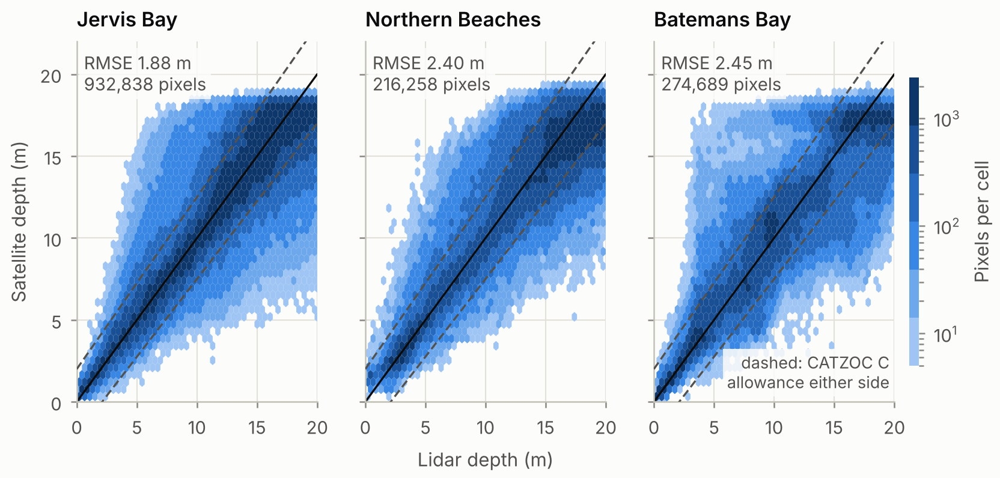
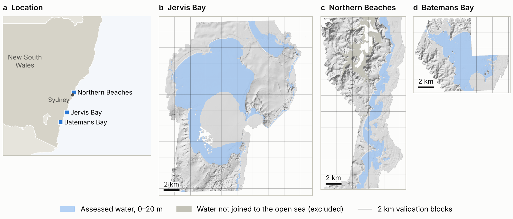
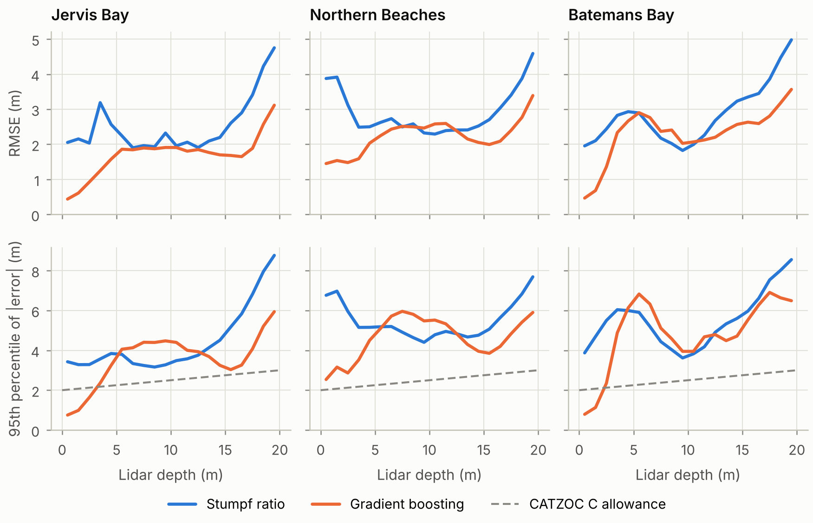
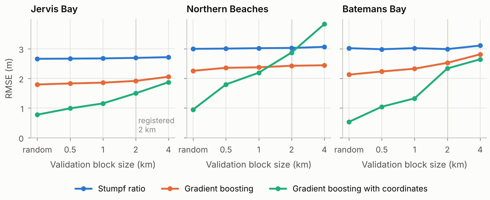
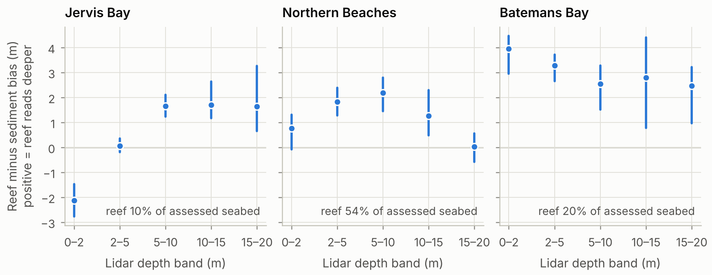
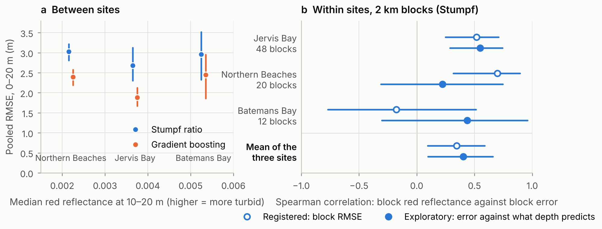
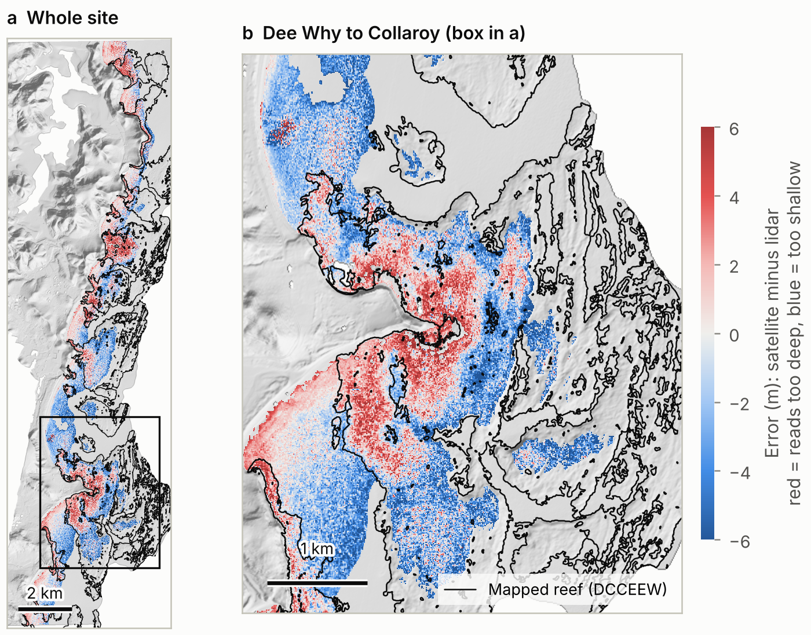

Satellite images can show water depth, because sunlight reflected from the seabed fades with depth, and fades at a different rate in each colour. This study tested how well that works on the New South Wales coast, for which no published test was found. Depths estimated from free Sentinel-2 images were compared with airborne laser (lidar) surveys flown within nine days of each image at three sites: sheltered Jervis Bay, the surf coast of Sydney’s Northern Beaches, and Batemans Bay at the mouth of the Clyde River. Two methods were tested, a standard colour-ratio formula and a machine-learning model, with every rule fixed in writing before any result was seen. The machine-learning model was the more accurate at every site. Neither is accurate enough for a navigation chart, and both erred more over reef than over sand.
- 1.9–3.0 m
- The typical error between 0 and 20 m deep: 1.9 to 2.5 m for the machine-learning model and 2.7 to 3.0 m for the colour ratio, depending on the site.
- ≈ 15 m
- The depth beyond which the error climbs. Deeper than this, too little light returns from the seabed, and the estimates fall short of the true depth.
- 1.8–4.3 ×
- How much better a model given map coordinates looked when it was tested on pixels picked at random than on separate 2 km squares it had never seen. A random test rewards memorising the place, not reading the water.


What these results do not tell you
- They are not for navigation. Satellite depth estimates are not a hydrographic survey. Even the lidar used here as ground truth is published with a warning against navigation use without further processing. The lidar is specified to within about half a metre; the satellite estimates are typically 2 to 3 m out.
- Each site was seen on one day. Every site was assessed on a single cloud-free image from late winter or early spring 2018. Other days, with different tides, swell or river flows, could give different results.
- Water clarity could not be isolated. On these dates the satellite’s measure of clarity sat too close to its own noise floor to rank the three sites, and with only three sites, clarity cannot be separated from reef cover, wave exposure or the atmosphere on the day.
- The surf zone is largely missing. Breaking waves and foam are removed before any depth is estimated. At Northern Beaches that removed about two thirds of the water shallower than 2 m, so results there describe the calmer patches only.
- Depths to 20 m, at three sites. Nothing here speaks to deeper water or to other coasts.
Satellite-derived bathymetry on an exposed temperate coast: a pre-registered accuracy assessment against airborne lidar at three New South Wales sites
Abstract
Background. Satellite-derived bathymetry (SDB) from Sentinel-2 has mostly been tested in clear or sheltered water; no assessment on the swell-exposed coast of New South Wales (NSW), Australia, was found. Methods. At three sites (a sheltered embayment, a surf coast and an estuary mouth), depths from one Sentinel-2 Level-2A scene per site were compared over 0–20 m with 2018 NSW marine lidar aggregated to 10 m. The Stumpf band-ratio method and a gradient-boosting model with image-only features were validated by spatially blocked cross-validation (2 km blocks, five folds, ten repeats) with block-bootstrap intervals. All protocols and predictions were committed before fitting. Results. Pooled RMSE was 2.68–3.03 m for the band ratio and 1.88–2.45 m for gradient boosting, better at every site by 0.51–0.80 m (paired intervals excluding zero). The band ratio failed IHO CATZOC C at every depth; gradient boosting met it to 2–3 m at two sites. Error rose beyond about 15 m. A model given coordinates scored an RMSE 1.8 to 4.3 times smaller on a random split than on blocks. Error did not follow the clarity metric across sites, but the metric spanned only 0.003 in red reflectance. Mapped reef read 1.3 to 4.0 m deeper than sediment at the same depth in most bands, and the surf coast’s larger error went with its 54% reef cover. Conclusions. On this coast a single Sentinel-2 scene gives a reconnaissance product with errors of about 2–3 m. Site screening should weigh reef cover and exposure as heavily as water clarity.
Keywords. satellite-derived bathymetry; Sentinel-2; airborne lidar bathymetry; spatial cross-validation; pre-registration; New South Wales
1 Introduction
Empirical satellite-derived bathymetry (SDB) rests on a simple physical fact: light reflected from the seabed is attenuated exponentially with depth, at a rate that differs between wavebands. Lyzenga (1978) related log-transformed radiance linearly to depth; Stumpf et al. (2003) replaced the band-by-band fit with the ratio of log-transformed blue and green reflectance, a two-parameter model that tolerates variation in bottom brightness. Sentinel-2 (Drusch et al., 2012) supplies 10 m imagery of every coast every few days at no cost, with surface reflectance from the Sen2Cor processor (Main-Knorn et al., 2017), and machine-learning regressions now often replace the linear forms (Ashphaq et al., 2021).
Published accuracies depend on the water and on how the validation was designed. In clear Caribbean water off St Thomas, Xie et al. (2023) report a 0–20 m RMSE of 1.28 m for random forest, 1.78 m for the Stumpf ratio and 2.19 m for a linear model, from an 80/20 split of points whose spatial design is not stated. In low-turbidity water off South Florida, Caballero & Stumpf (2019) report median absolute errors of 0.22–0.5 m. In temperate and optically complex settings, model inversion on the Irish coast gave mean RMSE of 1.60–2.43 m (Casal et al., 2020), an Aegean study with spatially independent calibration and validation sets reached 1.67 m (Traganos et al., 2018), and on the exposed, highly dynamic sandy coast at Hasaki, Japan, gradient-boosted trees reached R² of 0.84–0.92 to about 15 m on a 70/30 split of survey points (Hao Quang et al., 2025). The nearest Australian study, on the low-energy Adelaide coast, reports 0.41–0.51 m over 0.5–5 m (Downes et al., 2025). Turbidity is the recognised limit, and compositing many scenes is one response to it (Caballero & Stumpf, 2023).
The design of the validation matters as much as the water. Neighbouring pixels share depth, seabed and atmospheric error, so a random split places near-identical pixels on both sides of the divide and rewards a flexible model for memorising location (Ploton et al., 2020; Roberts et al., 2017). Accuracies obtained that way describe interpolation inside a surveyed area at least as much as prediction beyond it, and several of the figures above come from splits whose spatial independence is not reported.
The NSW coast is temperate and swell-exposed, with surf zones, rocky reefs and estuarine plumes, and the state’s 2018 marine lidar survey provides a contemporaneous, openly licensed reference along most of it. No published accuracy assessment of SDB on the NSW open coast was found. This study asks three questions. How accurate is Sentinel-2 SDB on this coast, and to what depth? Does a flexible model’s advantage over the band ratio hold out of sample at sites of different character? And does the error follow water clarity, between sites and within them? Every analysis was pre-registered (Nosek et al., 2018): its protocol, predictions and decision gate were committed to the project repository before the models were fitted.
2 Study sites and data
2.1 Sites
The three sites were chosen to span water clarity, from a sheltered, clear embayment to an estuarine plume (Figure 1, Table 1). Jervis Bay is a large embayment with a narrow entrance, sand-dominated sediments (Anderson et al., 2009), seagrass meadows and rocky reef along its shores; the open coast outside the entrance is included. Northern Beaches, from Queenscliff to Palm Beach in Sydney, is an open, swell-exposed coast of sandy embayments between rock headlands and platforms. Batemans Bay is the mouth of the Clyde River, whose plume spreads across the inner bay. Each site lies within a single lidar survey block flown on one date, so its reference is not a mosaic of dates.

| Jervis Bay | Northern Beaches | Batemans Bay | |
|---|---|---|---|
| Setting | Sheltered embayment and its entrance | Open surf coast, headlands and rock platforms | Estuary mouth, Clyde River plume |
| Sentinel-2 scene | 7 Sep 2018, S2A, baseline 00.01 | 27 Sep 2018, S2A, Collection-1 | 23 Aug 2018, S2B, Collection-1 |
| Lidar flown | 8–9 Sep 2018 | to 18 Sep 2018 | 24 Aug 2018 |
| Scene relative to lidar | 1 day before | 9 days after | 1 day before |
| Water level at overpass (m AHD) and gauge | −0.392, Jervis Bay 216470 | +0.501, Sydney 213470 (Patonga +0.539) | −0.181, Princess Jetty 216410 |
| Image shift applied, east and north (m) | −7.4, −1.0 | −0.4, −3.5 | +3.0, −4.9 |
| Assessed water, 0–20 m | 93.3 km², 932,838 pixels | 21.6 km², 216,258 pixels | 27.5 km², 274,689 pixels |
| 2 km validation blocks | 68 | 21 | 20 |
2.2 Lidar reference
The reference is the NSW Marine LiDAR Topo-Bathy survey of 2018 (NSW Department of Climate Change, Energy, the Environment and Water, 2018): a 5 m grid on the Australian Height Datum (AHD), flown between July and December 2018, licensed CC BY 4.0, and specified to IHO Order 1b, a total vertical uncertainty at 95% confidence of √(0.5² + (0.013 d)²) m, about ±0.5 m over 0–20 m (International Hydrographic Organization, 2022). Extracts were ordered through the ELVIS portal. While the second site was being prepared it emerged that ELVIS averages any extract spanning more than one survey block, returning a 4 × 4 mean of the native cells displaced by half a cell; native values sit on a centimetre lattice and averaged ones do not, which makes the averaging detectable. Most of Jervis Bay’s reference is averaged (257 of 299 one-kilometre tiles), differing from native by about 0.13 m RMS. The other two references are native, and the effect of averaging was measured directly (Section 4.6).
2.3 Imagery
Sentinel-2 Level-2A surface reflectance was read from the Earth Search catalogue (Element 84, 2026). For each site the scene nearest the lidar date whose water over the survey was free of cloud, haze and glint on inspection of a water-stretched quicklook was taken, with no depth data examined; turbidity was not a criterion. At Northern Beaches the two nearer scenes were clouded over the water, so the scene is nine days after the survey. One processing trap affects other users of this catalogue: Collection-1 items on Earth Search already have the −0.1 bottom-of-atmosphere offset (European Space Agency, 2022) removed while their band metadata still declare it, so applying the declared offset subtracts it twice. The item’s own flag was trusted, and a check at fetch that red and near-infrared (NIR) reflectance over water lies near zero arbitrates.
2.4 Water level, substrate and sea state
Water level at each overpass was interpolated from one-minute records of Manly Hydraulics Laboratory gauges in AHD (Manly Hydraulics Laboratory, 2026) (Table 1). At Northern Beaches the Sydney and Patonga gauges, either side of the site, agreed to 0.038 m. An estimate of water level from the image shoreline was within 0.10 m of the gauge at two sites but 0.70 m too high at Batemans Bay, so no site relied on it. Two habitat layers group the errors and never enter a model: the DCCEEW seabed reef extent, classified from the same 2018 lidar into reef and unconsolidated sediment (NSW Department of Climate Change, Energy, the Environment and Water, 2023), and the DPI Fisheries estuarine macrophyte map of seagrass (NSW Department of Primary Industries Fisheries, 2023), which covers estuaries to about 10 m and maps no seagrass on the open coast. The Sydney waverider record describes sea state at Northern Beaches between the survey and the scene.
3 Methods
3.1 Pre-registration
The analysis ran in phases, each governed by a protocol committed before any model was fitted to the data it covered: the band ratio at Jervis Bay (27 September 2026), rules for grouping errors by substrate (27 September), gradient boosting (29 September) and the two further sites (1 October). Each protocol fixed the model, calibration, validation, statistics, predictions and a decision gate. One amendment, described below, was made before any fit at the new sites. Any change after a run was logged as a deviation with both results kept (Table 4). Code was written after each protocol and tested on synthetic data before it met real data, and analyses that were not registered were labelled exploratory and written to separate outputs.
3.2 Reference grid and masks
The lidar does not nest in the Sentinel-2 grid, so it was aggregated onto each scene’s 10 m grid by exact area weighting after the image’s geolocation error had been measured and removed. The shift was measured by gradient correlation against NSW orthoimagery over land windows of 2 km, falling back to 1.5 km where fewer than four windows agreed, and applied as a rigid translation of 3.5 to 7.5 m (Table 1). Depth is the gauged water level minus the lidar elevation. A pixel was assessed if its lidar depth lay between 0 and 20 m with full lidar coverage, and if it was free of cloud and shadow and not bright in the NIR, which on this coast flags surf, foam and glint. The Northern Beaches box also held Pittwater, a sheltered estuary, and two coastal lagoons whose levels are not the sea’s: 11.5 of its 32.3 km² of water. Since the site’s registered role was the exposed open coast, an amendment made before any fit, from the lidar and habitat maps alone, restricted assessment to water connected to a named open-sea point (21.6 km² in 21 blocks).
3.3 Models
The band ratio follows Stumpf et al. (2003): pSDB = ln(1000 ρblue) / ln(1000 ρgreen), and depth = m₁ pSDB − m₀ by ordinary least squares, one calibration per site. Inside each training fold the fit used a depth-balanced sample (up to 5,000 pixels from each 1 m depth bin) below a fitting limit, the depth at which the binned median ratio stops rising, or 20 m if it rises throughout. Depth balancing matters because most pixels lie deeper than 10 m, where the signal is weakest.
The flexible model is gradient-boosted regression trees (Friedman, 2001), as implemented in scikit-learn’s HistGradientBoostingRegressor (Pedregosa et al., 2011), with fixed settings and no tuning: squared-error loss, 300 iterations, learning rate 0.1, 31 leaves, at least 100 samples per leaf and no early stopping. Its features are per-pixel and from the image alone: ln(1000 ρ) for the blue, green, red and NIR bands, the Stumpf ratio and the blue-to-red ratio. It is trained on the same depth-balanced sample over the whole 0–20 m. No coordinates, neighbourhood or texture features are used. A third model adds easting and northing to the same features; it was registered solely to show what a random split rewards and is never treated as a result.
No sun-glint correction was applied. Over optically deep water at Jervis Bay the covariance between NIR and blue that a deglinting regression (Hedley et al., 2005) would remove was dominated by kilometre-scale structure that is water or atmosphere, not glint, and Sentinel-2’s band-to-band timing decorrelates glint at the pixel scale (Harmel et al., 2018).
3.4 Validation and statistics
Validation is spatially blocked: 2 km square blocks aligned to the scene grid are dealt at random to five folds, ten times (fold seeds 0–9), with identical folds for every model. Each pixel’s prediction is the mean of its ten out-of-fold predictions, none from a model that saw its block. Error is e = SDB − lidar, so positive values read too deep. The statistics are pooled RMSE, bias and R², and the depth-balanced RMSE, the mean of the RMSEs in five bands (0–2, 2–5, 5–10, 10–15 and 15–20 m), reported because pooled RMSE depends on each site’s depth distribution. Intervals are 95% percentile intervals from a block bootstrap (2 km blocks, 1,000 draws), and paired differences between models resample both together. A random pixel split, a curve of RMSE against block size (random, 0.5, 1, 2 and 4 km) and a residual correlogram are reported alongside; the correlation range is the shortest lag at which residual correlation falls below 0.1. The breakdown depth is the lower edge of the shallowest 1 m bin whose 95th percentile of absolute error exceeds IHO CATZOC C, 2.0 m plus 5% of depth (International Hydrographic Organization, 2000). S-57 gives no confidence level for this depth accuracy, so the comparison with the 95th percentile is this study’s reading of it. The first phase had a gate: pooled RMSE below 4 m at Jervis Bay. The decision gates are listed with the predictions in Table 3.
3.5 Water clarity
The clarity metric, fixed in advance from the image alone, is the median red reflectance (band 4, 665 nm) over assessed pixels 10–20 m deep. Red reflectance rises with suspended matter and underlies single-band turbidity algorithms (Nechad et al., 2010). The 10 m floor keeps the seabed’s contribution small, because pure water alone absorbs about 0.4 m⁻¹ at this wavelength (Pope & Fry, 1997). The protocol stated in advance that differences of a few thousandths between sites might reflect atmospheric correction rather than water. The fourth decision gate asked whether error rises from the clearest site to the most turbid. Because three sites cannot separate clarity from everything else that differs between them, the registered inferential test works within sites: the Spearman correlation between block median red and block RMSE over the same pixels, for blocks holding at least 200 of them, with intervals from resampling blocks (1,000 draws), averaged across sites so that site-level offsets cannot create a correlation.
After the registered result showed that the depth mix of blocks confounds this test, an exploratory version was defined and committed before it was run. It compares each block’s error with the error its depths alone would predict, taken from the site’s other blocks in 1 m bins, and correlates the ratio with block red. The rule for reading it was fixed in advance: a link beyond depth is supported only if the mean correlation’s interval lies above zero and no site’s correlation is negative.
3.6 Substrate
Each pixel was classed by the majority (at least half) of its area, sampled at 2 m, as Posidonia, other seagrass, reef, or sediment with no seagrass mapped, the reference class. Within each depth band the bias of a class minus that of sediment was compared, with block-bootstrap intervals, wherever both held at least 1,000 pixels. At Jervis Bay the comparison is inside the bay, as registered; at the other sites it covers the whole site. The direction was stated in advance: dark seabed reads deeper.
4 Results
4.1 Accuracy by site and depth
Pooled RMSE was below the 4 m gate for both models at every site (Table 2). Pooled RMSE was 2.68, 3.03 and 2.96 m for the band ratio at Jervis Bay, Northern Beaches and Batemans Bay, and 1.88, 2.40 and 2.45 m for gradient boosting. Pooled biases were small, but the band ratio’s bias is structured by depth: 0.6 to 1.7 m too deep through 0–10 m (3.1 m in the top 2 m at Northern Beaches) and 2.1 to 2.5 m too shallow at 15–20 m, the pattern of a straight line fitted through a noisy, saturating relationship. At Jervis Bay the open coast outside the entrance carried about twice the error of the bay (band ratio 4.69 against 2.27 m; gradient boosting 3.08 against 1.65 m).
| Jervis Bay | Northern Beaches | Batemans Bay | |
|---|---|---|---|
| Band ratio (Stumpf) | |||
| Pooled RMSE (m) | 2.68 [2.31, 3.13] | 3.03 [2.81, 3.22] | 2.96 [2.32, 3.52] |
| Bias (m) | −0.42 [−0.95, +0.06] | −0.55 [−1.11, −0.01] | −0.40 [−1.53, +0.67] |
| R² | 0.69 [0.57, 0.77] | 0.65 [0.56, 0.70] | 0.70 [0.45, 0.81] |
| Depth-balanced RMSE (m) | 2.48 | 3.02 | 2.73 |
| Blocked ÷ random-split RMSE | 1.008 | 1.010 | 0.982 |
| Breakdown depth, CATZOC C | 0 m | 0 m | 0 m |
| Gradient boosting | |||
| Pooled RMSE (m) | 1.88 [1.67, 2.13] | 2.40 [2.20, 2.58] | 2.45 [1.86, 2.95] |
| Bias (m) | −0.12 [−0.41, +0.15] | −0.31 [−0.69, +0.08] | −0.15 [−0.93, +0.51] |
| R² | 0.85 [0.80, 0.88] | 0.78 [0.73, 0.82] | 0.79 [0.64, 0.88] |
| Depth-balanced RMSE (m) | 1.53 | 2.12 | 2.10 |
| Blocked ÷ random-split RMSE | 1.060 | 1.069 | 1.159 |
| Breakdown depth, CATZOC C | 3 m | 0 m | 2 m |
| Gradient boosting − band ratio, RMSE (m) | −0.80 [−1.06, −0.57] | −0.63 [−0.78, −0.50] | −0.51 [−0.90, −0.15] |
| Coordinate model (leakage demonstration) | |||
| Random split → 2 km blocks, RMSE (m) | 0.74 → 1.32 | 0.91 → 2.66 | 0.51 → 2.16 |
| Residual correlation range, band ratio | 4 km | 1 km | 2 km |
Error by 1 m bin (Figure 2) has the same shape at every site. For the band ratio it lies near 2 to 3 m RMSE from about 5 m to 14 m and climbs beyond about 15 m, to 4.5 to 5 m in the deepest bin; at Northern Beaches it is also high in the top 2 m (3.90 m). Gradient boosting is lower in the shallows at every site and climbs from about 16 to 17 m. The band ratio’s 95th-percentile error exceeds the CATZOC C allowance from the shallowest bin at all three sites. Gradient boosting meets it to 3 m at Jervis Bay and 2 m at Batemans Bay, and nowhere at Northern Beaches. As a descriptive count, 88%, 78% and 79% of its pixels fall within the allowance (band ratio 75%, 63% and 66%).

The assessed share of the reference water falls in the shallows, where the NIR flag removes surf, foam and glint. In the 0–2 m band, 60% of reference water was assessed at Jervis Bay (39% flagged bright), 35% on the Northern Beaches open coast (65% flagged) and 82% at Batemans Bay (18%). From 2 m down, at least 90% was assessed at every site, and at least 97% at Jervis Bay and Batemans Bay.
4.2 Gradient boosting against the band ratio
Gradient boosting was more accurate at every site, by 0.80 [0.57, 1.06] m at Jervis Bay, 0.63 [0.50, 0.78] m at Northern Beaches and 0.51 [0.15, 0.90] m at Batemans Bay. Its advantage lies at the ends of the depth range: in the top 2 m it reduced RMSE by 1.57, 2.39 and 1.44 m, and at 15–20 m by 1.35, 1.00 and 1.07 m, all with intervals clear of zero. At 5–10 m the difference could not be distinguished from zero at any site (−0.19 [−0.61, +0.14], −0.11 [−0.77, +0.30] and +0.21 [−0.08, +0.52] m). The prediction that its advantage would be smaller at Batemans Bay than at Jervis Bay held on the point estimates, but the two intervals overlap.
4.3 Validation design
The band ratio’s random-split and blocked RMSE are almost identical (ratios 0.982–1.010) and its block-size curves are flat (Figure 3): a two-parameter line cannot memorise location, so it serves as a control. Gradient boosting opens a modest gap (1.060–1.159) and its error rises steadily with block size, so its 2 km figures are best read as lower bounds; on 4 km blocks it still outperforms the band ratio at every site (2.06, 2.44 and 2.81 m against 2.72, 3.06 and 3.11 m). The coordinate model shows what a random split rewards: its random-split RMSE was 0.74, 0.91 and 0.51 m, against 1.32, 2.66 and 2.16 m on 2 km blocks, ratios of 1.77, 2.94 and 4.26. One registered prediction failed here. At Jervis Bay the coordinate model beat image-only gradient boosting even on 2 km blocks (1.32 against 1.88 m), because depth is correlated over kilometres and the model interpolated the surveyed depths of neighbouring training blocks. Its advantage drains away as blocks grow, to 1.87 against 2.06 m on 4 km blocks. Residuals of the band ratio stayed correlated beyond the 2 km blocks at Jervis Bay (to 4 km), so intervals there may be somewhat narrow.

4.4 Seabed type
Mapped reef read deeper than sediment at the same depth at all three sites (Figure 4): at Jervis Bay inside the bay by 1.66, 1.71 and 1.64 m in the three bands from 5 to 20 m; at Northern Beaches by 1.84, 2.20 and 1.27 m from 2 to 15 m, with no difference at 15–20 m (+0.03 [−0.58, +0.57] m); and at Batemans Bay by 2.47 to 3.95 m in every band, all intervals clear of zero. At Jervis Bay in the top 2 m the contrast reversed (−2.12 m) because bare shallow sediment itself reads about 2.2 m too deep. The registered expectation that seagrass would read deeper failed: Posidonia differed from sediment by +0.16 m at both 2–5 m and 5–10 m, with intervals spanning zero.

A descriptive breakdown, made after the results were seen, shows what the site differences are made of. Reef covers 10%, 54% and 20% of the assessed seabed at the three sites. On sediment alone the band ratio’s RMSE is 2.42, 2.58 and 2.77 m, within 0.35 m across sites; on reef alone it is 4.63, 3.35 and 3.60 m.
4.5 Water clarity
Gate 4 was not met. Ordered by the clarity metric, the sites run Northern Beaches (0.0022), Jervis Bay (0.0037) and Batemans Bay (0.0053), yet the site that reads clearest has the largest band-ratio error (Figure 5a). The metric spans 0.003, inside the margin the protocol attributed in advance to atmospheric correction, and 10% of Northern Beaches’ pixels at 10–20 m sit at the product’s floor of 0.0001.
Within sites, the registered block test gave Spearman correlations of +0.52 [+0.25, +0.71] at Jervis Bay (48 blocks), +0.70 [+0.32, +0.89] at Northern Beaches (20) and −0.18 [−0.77, +0.51] at Batemans Bay (12), a mean of +0.35 [+0.09, +0.59] for the band ratio and +0.31 [+0.05, +0.58] for gradient boosting. The prediction for Batemans Bay therefore failed; with 12 blocks spanning a narrow range of red, only a strong trend could have been detected. The test is confounded by depth. Block mean depth is correlated with block error at every site (+0.62, +0.71 and +0.64) and with block red in opposite directions at the two new sites (+0.70 at Northern Beaches, −0.71 at Batemans Bay). The exploratory depth-standardised test removed most of that tie (depth against standardised error −0.22 to +0.16) and gave +0.55 [+0.29, +0.74], +0.22 [−0.31, +0.75] and +0.44 [−0.30, +0.96], a mean of +0.40 [+0.10, +0.66] (gradient boosting +0.34 [+0.02, +0.60]). By the rule fixed in advance this is supported, but only Jervis Bay’s own interval excludes zero (Figure 5b).

4.6 Sensitivity runs and corrections
Rerunning Northern Beaches against an ELVIS-averaged extract of the same coast moved pooled RMSE by −0.02 m for both models and no depth band by more than 0.07 m, so Jervis Bay’s averaged reference does not threaten its headline figures; it does make its breakdown by sub-pixel seabed relief unreliable, and that breakdown is not reported. The Jervis Bay band-ratio run, made first at a water level estimated from the image and repeated at the gauged level as the protocol required, moved from 2.70 to 2.68 m. One computing error was found after the clarity analysis was first run and corrected, with both results kept (Table 4). Table 3 lists every registered prediction and gate.
| Stated in | Prediction or gate | Outcome |
|---|---|---|
| Gate 1 | Seabed resolvable in the scene; lidar and image align | Passed (7.5 m shift measured and removed) |
| Gate 2 | Band-ratio pooled RMSE below about 4 m at Jervis Bay | Passed (2.68 m) |
| Gate 3 | Blocked RMSE within about 30% of random-split RMSE | Passed (band ratio 1.008; gradient boosting 1.060–1.159) |
| Gate 4 | Error rises from the clearest site to the most turbid | Not met |
| Decisions register | The gauge reads 0.1–0.2 m above the image estimate of water level at Jervis Bay | Held (0.104 m) |
| Substrate addendum | Reef reads deeper than sediment | Held at 5–20 m |
| Substrate addendum | Seagrass reads deeper than sediment | Failed (+0.16 m, intervals span zero) |
| Gradient boosting, P1 | Beats the band ratio on blocks | Held (−0.80 m) |
| Gradient boosting, P2 | Opens a larger blocked/random gap than the band ratio | Held (1.060 against 1.008) |
| Gradient boosting, P3 | The coordinate model’s random-split RMSE is more than 30% below its blocked RMSE | Held (44% below) |
| Gradient boosting, P4 | The coordinate model does no better than image-only gradient boosting on blocks | Failed (1.32 against 1.88 m) |
| Three sites, P1 | Batemans Bay has the highest clarity metric | Held, weakly (span 0.003) |
| Three sites, P2 | Band-ratio RMSE at both new sites exceeds 2.68 m | Held on point estimates only |
| Three sites, P3 | Block error rises with block red at Batemans Bay | Failed (−0.18 [−0.77, +0.51]) |
| Three sites, P4 | Gradient boosting wins at every site, by less at Batemans Bay | Held; second half on point estimates |
| Date (2026) | What changed | Relative to the fit | Effect |
|---|---|---|---|
| 27 Sep | The two sentences defining the band ratio’s fitting limit conflict for a steadily rising curve; implemented as written (20 m when the peak is in the deepest bin) | Before | None; the other reading, run as exploratory, gave 2.82 m against 2.70 m |
| 29 Sep | Jervis Bay band-ratio run repeated at the gauged water level (−0.392 m AHD) instead of the image estimate (−0.496 m), as the protocol required | After | 2.70 → 2.68 m; both reported, the gauged run primary |
| 1 Oct | Jervis Bay reference found to be mostly averaged by the supplying portal; disclosed rather than re-ordered | After | Measured by a sensitivity run: −0.02 m; relief strata withdrawn |
| 1 Oct | Earth Search Collection-1 offset: the item’s flag trusted over its band metadata | Before any fit at the new sites | Jervis Bay (baseline 00.01) unaffected |
| 1 Oct | Co-registration falls back to 1.5 km windows where fewer than four 2 km windows agree | Before any fit at the new sites | Used at Batemans Bay (three windows at 2 km, seven at 1.5 km) |
| 16 Nov | Amendment: Northern Beaches assessed on the open coast only | Before any fit at the new sites | 11.5 km² of estuary and lagoon removed; 21 blocks remain |
| 16 Nov | Clarity analysis: pixels with no red value left out of block medians, as they already were from the site metric; 13 of Northern Beaches’ 20 block medians had been missing values ranked as the largest | After; both runs kept | Northern Beaches block correlation −0.16 → +0.70; mean +0.06 → +0.35; gate 4 and every prediction unchanged |
| 19 Nov | Shallow-water exclusion figures: estuary and lagoon water had been counted in the 0–2 m denominator at Northern Beaches | Documentation only | Assessed share of open-coast water at 0–2 m 12% → 35% |
5 Discussion
5.1 Against the literature
The band ratio’s 2.7–3.0 m exceeds the 1.78 m reported for clear water at St Thomas (Xie et al., 2023), and gradient boosting’s 1.9–2.5 m exceeds the 1.28 m of random forest there. Part of that gap is water and part is design. The St Thomas split is of unstated spatial design, and the coordinate model here shows a random split lowering RMSE by a factor of 1.8 to 4.3. For image-only features the effect is smaller, gradient boosting’s blocked RMSE lying 6–16% above its random-split RMSE, so it is location, or features that stand in for it, that makes the split decisive. The nearest comparisons are the Irish coast, at 1.60–2.43 m from model inversion over twelve scenes (Casal et al., 2020), and the Aegean, at 1.67 m with spatially independent sets (Traganos et al., 2018). Gradient boosting at Jervis Bay (1.88 m) lies within that range, and the exposed and estuarine sites (2.40 and 2.45 m) at or just beyond its upper end. The Hasaki study reached R² of 0.84–0.92 to about 15 m on a point split (Hao Quang et al., 2025); gradient boosting here reached 0.78 to 0.85 to 20 m on blocks, a different test. Gradient boosting’s advantage of 0.5–0.8 m matches the 0.5 m between random forest and the band ratio at St Thomas and, unlike that figure, holds on spatially independent ground at three sites.
5.2 What sets the error here
Gate 4 was not met, and two qualifications govern how far that result can be taken. The band-ratio errors overlap within their intervals, so the only resolved contrast between sites is gradient boosting’s, Jervis Bay against Northern Beaches. And the clarity metric spans only 0.003 in red reflectance, within the margin attributed in advance to atmospheric correction, with 10% of Northern Beaches’ deeper pixels at the lowest value the product records. The result therefore shows that no monotonic relationship was observed and that this imagery could not establish a clarity gradient between the sites. It does not show that clarity is immaterial. Each site is also represented by a single scene, so a difference between sites is equally a difference in acquisition date, sea state, sun geometry and atmosphere. That the two models agree rules out an artefact of either model, since they share every pixel and the same reference, but not an artefact of the scene.
The composition of the errors points to the seabed rather than the water column. Depth distribution accounts for little: Northern Beaches holds the largest share of pixels between 15 and 20 m (42%, against 35% and 27%), yet with each depth band weighted equally it still has the largest band-ratio error. Substrate accounts for much more. Mapped reef makes up 54% of the assessed seabed at Northern Beaches against 10% at Jervis Bay and 20% at Batemans Bay, and in most depth bands reef reads deeper than sediment at all three sites; on sediment alone the three sites lie within 0.35 m of one another. Northern Beaches’ reef is no worse than Jervis Bay’s (3.35 against 4.63 m); the site simply has far more of it. This breakdown is descriptive and post hoc rather than a test, and on this coast it cannot be disentangled from exposure, because all of Northern Beaches’ reef lies on an open, swell-dominated shoreline. The reef layer records presence, not cover, so whether kelp, urchin barren or bare rock produces the bias remains open.
Exposure leaves a separate mark in the shallows. At Northern Beaches the band-ratio error between 0 and 2 m is 3.90 m, against 2.11 m at Jervis Bay; 65% of the open-coast water in that band was too bright in the NIR to assess, which on this coast means surf; and a 1.8 m swell at a 15 s period was running at the overpass. The scene was acquired nine days after the lidar survey, with ordinary swell in between, so within the surf zone the lidar may not describe the seabed the satellite observed. These effects are confined to shallow water, however. The bands from 0 to 5 m hold only 11% of Northern Beaches’ assessed pixels, and gradient boosting performs worse there than at Jervis Bay in every depth band, so surf and seabed change cannot account for the whole difference.
Within each scene the evidence leans the other way. The exploratory analysis finds that blocks with higher red reflectance err more than their depths alone would suggest, with the same sign at all three sites, although only Jervis Bay is resolved on its own. Red reflectance also rises with foam and glint, so this is a lead concerning red reflectance rather than evidence about turbidity, and it warrants a registered test on further scenes.
5.3 Practical reading
From a single Sentinel-2 scene, SDB on this coast is a reconnaissance product. It shows the form of the seabed, the position of reefs and channels, and where a survey would be best directed, but it does not meet CATZOC C. A user should expect reef to read 1 to 4 m deeper than sand at the same depth, and anything beyond about 15 m to read too shallow (Figure 6). For site screening, reef cover and wave exposure merit as much scrutiny as water clarity. In the surf zone, where colour-based methods lose their pixels, wave-kinematic bathymetry from Sentinel-2’s band timing is an alternative, though at much coarser accuracy (Almar et al., 2021); compositing many scenes (Caballero & Stumpf, 2023) would address the single-scene limit and allow sea state to vary while the seabed stays fixed.

6 Limitations
Single scene per site. Each site is represented by one Sentinel-2 acquisition (23 August, 7 September and 27 September 2018). The results describe the methods under those days’ tide, swell, sun geometry and atmosphere, not across seasons, floods or river plumes, and any difference between sites is equally a difference between scenes.
Clarity not isolated. The clarity metric (median red reflectance at 10–20 m) spans 0.0022 to 0.0053 across the sites, within the margin attributed in advance to differences in atmospheric correction, and 10% of Northern Beaches’ 10–20 m pixels sit at the product’s minimum value. With three sites, clarity cannot be separated from reef cover, exposure or scene-to-scene atmospheric differences.
Shallow water. Pixels too bright in the near-infrared are removed before any depth is estimated. In the 0–2 m band this removes 65% of Northern Beaches’ open-coast water, where the cause is surf, 39% at Jervis Bay and 18% at Batemans Bay, where glint on wavelets or very shallow bright sand may also be responsible. Results in the top 2 m describe the remaining pixels only.
Seabed change. Jervis Bay and Batemans Bay were imaged one day before their lidar surveys, so seabed change is unlikely to matter. Northern Beaches’ nearest clear image followed its survey by nine days on an active surf coast, with a 1.8 m, 15 s swell at the overpass though no storm in between; in the top 5 m, surf and moved sand cannot be separated.
Imagery and models. All runs use standard Sentinel-2 Level-2A surface reflectance, with no sun-glint correction, no water-specific atmospheric correction and no model tuning. Purpose-built processing and tuned or substrate-aware models may reduce the error; none would remove the loss of signal with depth.
Reference uncertainty. The lidar is specified to IHO Order 1b, about ±0.5 m at 95% confidence over 0–20 m. That is small against the satellite error overall, but comparable to gradient boosting’s error in the top 2 m at Jervis Bay and Batemans Bay (0.55 and 0.60 m). Jervis Bay’s lidar extract was also averaged by the supplying portal where it crossed survey blocks (about 0.13 m RMS). The same comparison at Northern Beaches moved pooled RMSE by 0.02 m, so the headline figures stand, but Jervis Bay’s breakdown by seabed roughness is unreliable.
Spatial dependence. Residual errors stay correlated over 4 km at Jervis Bay, beyond the 2 km validation blocks, so its intervals may be somewhat narrow. Gradient boosting’s error also grows with block size, from 1.92 to 2.06 m at Jervis Bay and from 2.53 to 2.81 m at Batemans Bay between 2 and 4 km blocks, while Stumpf’s barely changes; its 2 km figures are best read as lower bounds. It still outperforms Stumpf at every site on 4 km blocks.
Scope. Northern Beaches is assessed on the open coast only, by a pre-fit amendment that excluded Pittwater and the coastal lagoons. All results are for 0–20 m. The within-site analysis adjusted for depth is exploratory: it was defined after the registered result had been seen.
7 Conclusions
On the NSW coast, depth from a single Sentinel-2 scene had a pooled RMSE of 2.7–3.0 m with the Stumpf band ratio and 1.9–2.5 m with image-only gradient boosting, over 0–20 m and on spatially independent validation. Gradient boosting was the more accurate at every site, mainly in the shallows and beyond about 15 m, where a straight line through a saturating relationship fails. Neither method meets CATZOC C across the range. A model given coordinates scored up to 4.3 times better under a random split than on unseen blocks, so accuracy claims for SDB need spatially independent validation. Error did not follow the clarity metric across the three sites, but that metric could not rank them, so the result is silent on clarity rather than against it. The site differences go with reef cover and exposure, which on this coast coincide. Within scenes, an exploratory test links red reflectance to error beyond what depth explains; a registered test on several scenes per site would settle whether that is turbidity.
Data and code
Code, protocols, the decisions register and every output are at https://github.com/WvR-Spatial/sdbNSW, with the protocol commits named in each output record. The four lidar extracts used are published unmodified, with attribution and checksums, as a release of that repository. Sentinel-2 data are from the Copernicus programme; the tide and wave records are available from Manly Hydraulics Laboratory on request. Code is released under the MIT licence and this paper and its figures under CC BY 4.0.
Acknowledgements
Lidar and reef mapping: NSW Department of Climate Change, Energy, the Environment and Water. Tide and wave records: Manly Hydraulics Laboratory, for the Department. Seagrass mapping: NSW Department of Primary Industries Fisheries. Imagery: Copernicus Sentinel-2 data (2018), processed by ESA and served by Element 84’s Earth Search. Orthoimagery used only as a positional reference: NSW Spatial Services.
References
How this was built
I built this part-time over about eight weeks, a few of them spent waiting for tide-gauge records, using an AI agent as the main means of production and organising the work so that everything it produced could be checked.
The agent, Claude, ran in a cloud workspace and reached my workstation through MCP connectors: a shell and file bridge into the project folder, and a QGIS server that let it query ArcGIS REST services and inspect layers. It wrote most of the 10,000 or so lines of Python, including 282 tests, and drafted the protocols and documentation. I set the question and the sites, ordered the lidar and requested the tide records, checked the image registration by eye in QGIS, made each methodological decision, ran every step on my own machine and wrote the interpretation.
Three practices made the output checkable. Each analysis was pre-registered, so its protocol was committed before any model saw the reference data. Every change is logged with its reason, including the agent’s mistakes: a site boundary that silently took in an estuary, a rule that passed its tests and failed on real data, and a sorting fault that reversed one site’s result. And every file moved between machines was verified by checksum at its destination.
The outcome is a study of wider scope than I would have attempted alone in the same time, with a record of how each part was made.